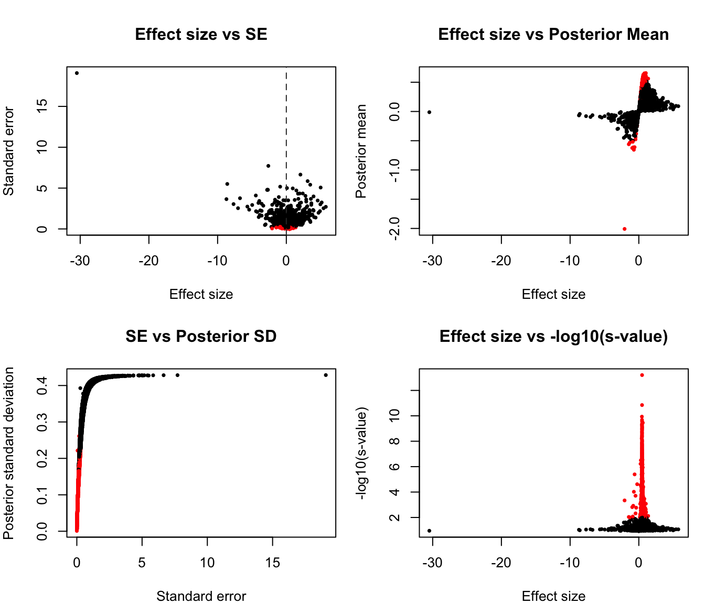
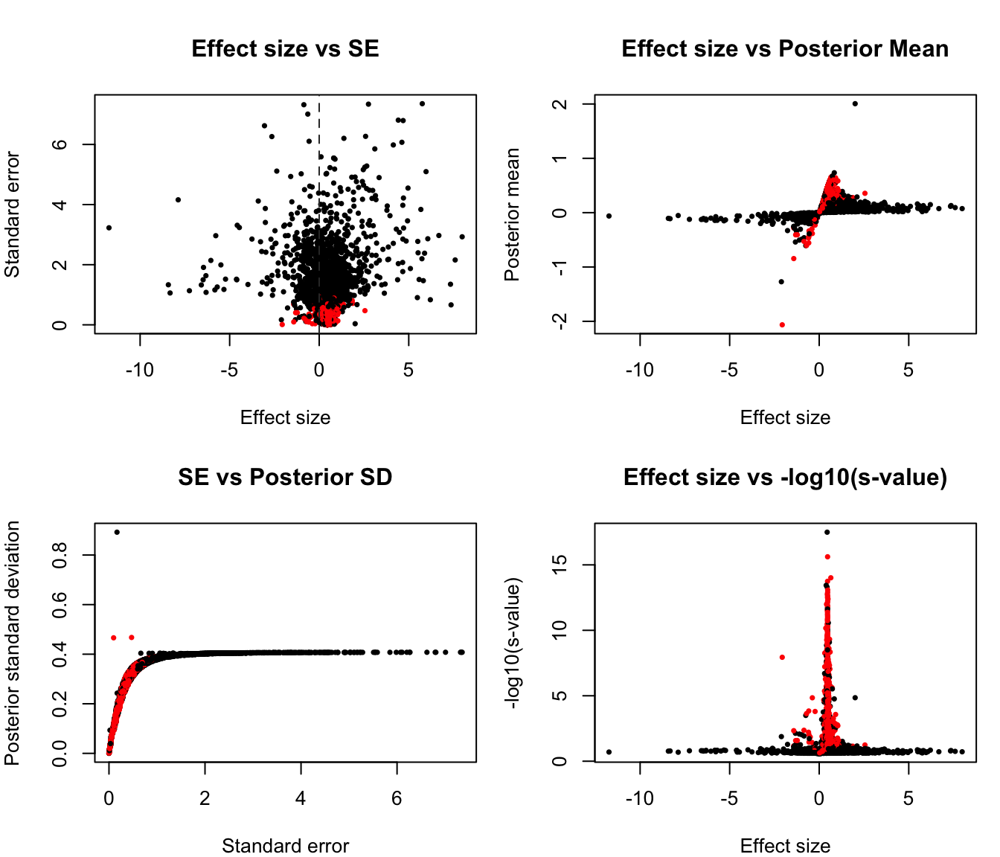
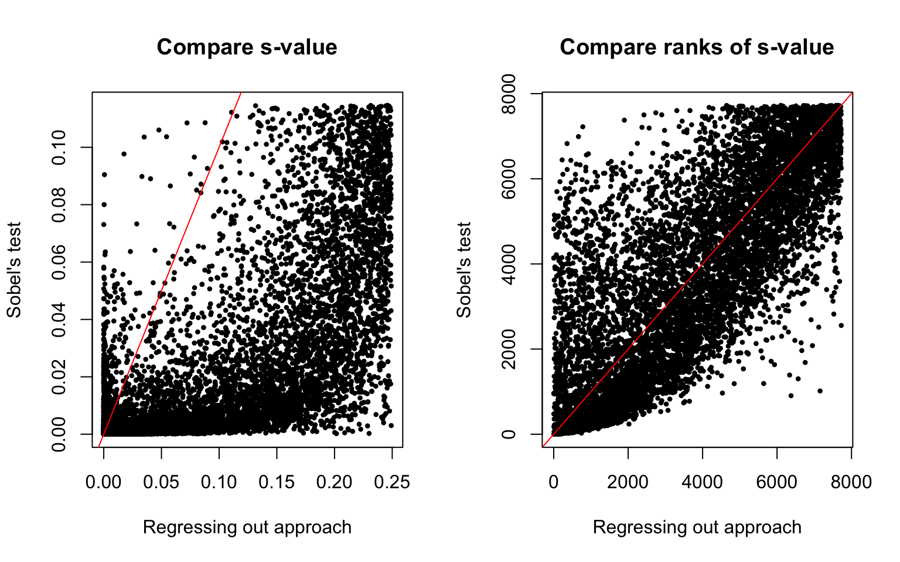
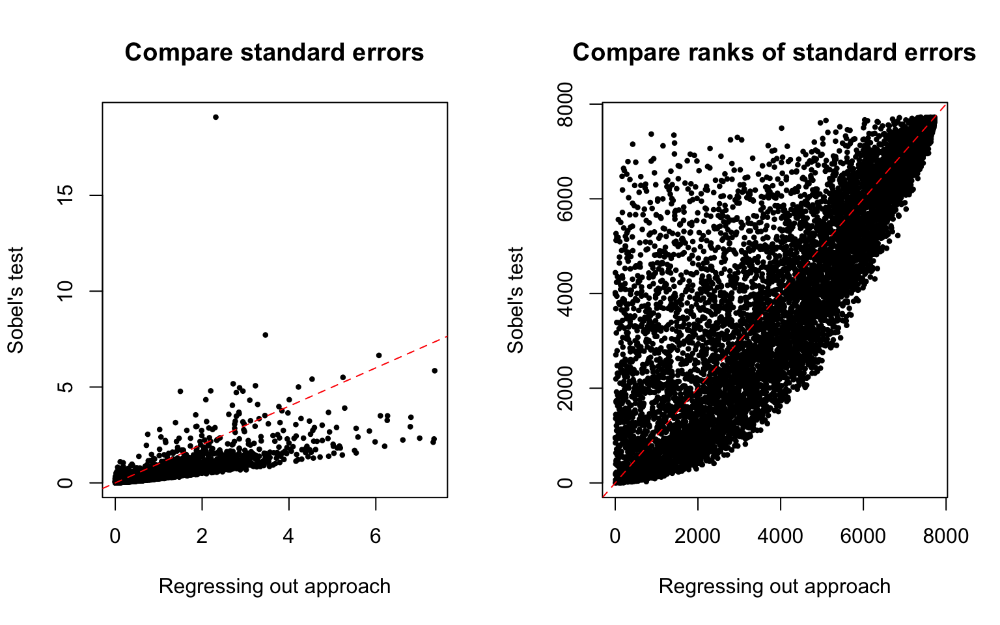
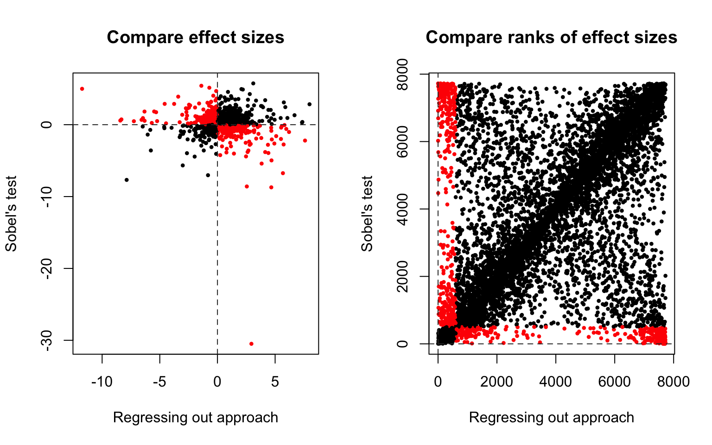

Warning in as.POSIXlt.POSIXct(Sys.time()): unknown timezone 'zone/tz/2017c.
1.0/zoneinfo/America/Chicago'Last updated: 2017-12-19
Code version: 25256f0
The motivation of the current anaysis is to estimate the contribution of DNA methylation to phenotype differences (e.g., tissue, species, etc.) in gene expression. In terms of linear models, the hypothesis is that the relationship between independent variable phenotypes and dependent variable gene expression is partially due to the mediating effect of DNA methylation. We assess the mediating effect of methylation in the association between phenotypes and expression under the following framework. Consider a hypothetical example. Say we know A causes B, and this relationship may be due to C which is highly correlated with A and and B. The hypothesis is that the relationship between A and B can be explained by the mechansim of A -> C -> B. To quantify the mediating effect of C on the relationship of A and B, we estimate the total effect of A on B and the direct effect of A on B after controlling for C. Total effect of A on B equals the direct effect of A on B after controlling for C and the indirect effect of A on B through C. When the indirect effect is large, we say that C plays a significant role in mediating the relationship between A and B. Applying to the current problem, we hypothesize that the total effect of phenotype on expression equals the direct effect of phenotype on expression after controlling for methylation and the indirect effect of phenotype on expression through methylation.
Sobel’s test (1987) provides a method to determine whether the reduction in the independent variable is significant, after including the mediating varible in the model. We compute Sobel’s test to quantify the reduction in the phenotype effect on gene expression, after including DNA methylation in the model. ash is applyed to the Sobel’s test statistic to obtain posterior estimate of reduction in effect size which accounts for standard error of both effect sizes.
For each gene, we fit three different linear models as follows:
\(Y_g = \gamma_1 + \tau X^P + \epsilon_1 \tag{Eq. 1}\)
\(X^M_g = \gamma_2 + \alpha X^P + \epsilon_2 \tag{Eq. 2}\)
\(Y_g = \gamma_3 + \tau^{\prime} X^P + \beta X^M_g + \epsilon_3 \tag{Eq. 3}\)
\(~\)
Notations:
\(Y_g\): length-\(N\) gene expression vector for gene \(g\).
\(X^M_g\): length-\(N\) vector for methylation measurements corresponding to samples at gene \(g\).
\(X^P\): length-\(N\) vector for sample phenotype labels.
\(\tau\): estimated total effect of phenotype \(X^S\) on expression \(Y_g\).
\(\tau^{\prime}\): estimated effect of phenotype \(X^S\) on expression \(Y_g\) after controlling for \(X^M_g\), or the direct effect of phenotype on expression.
\(\alpha\): estimated effect of phenotype\(X^S\) on the methylation \(X^M_g\).
\(\beta\): estimated effect of methylation \(X^M_g\) on expression \(Y_g\) after controlling for phenotype differences.
\(\gamma_1, \gamma_2, \gamma_3\): intercepts
\(\epsilon_1, \epsilon_2, \epsilon_3\): error terms in each model. Each assumed to be iid and follows normal distributions with mean 0 and variance \(\sigma^2_1, \sigma^2_2, \sigma^2_3\).
\(~\)
Sobel’s test statistic for mediating effet is
\[ t = \frac{\tau - \tau^{\prime}}{se} \] where \(se = \sqrt(\alpha^2\sigma^2_{\beta} + \beta^2 \sigma^2_beta)\), and \(\sigma2_{\alpha}\) and \(\sigma2_{\beta}\) are standard error of \(\alpha\) and \(\beta\), respectively.
\(~\)
We use ash to estimate statistical significance of \(t\) using \(\tau-\tau^{\prime}\) as effect size and \(se\) as standard error of the effect size.
\(~\)
During data preprocessing, RNA-seq data are transformed to log2 counts and methylation data to log2 percent methylated reads. For fitting \(\text{Eq. 1}\) - estimating the total effect of phenotype on gene expression, I applied voom to account for variance-mean dependency in RNA-seq data, and the total effect \(\tau\) and the associated \(\sigma^2_1\) are estimated based on weight least square regression. For \(\text{Eq. 2}\) - estimating the phenotype effect on methylation- and \(\text{Eq. 3}\) - estimating the effect of phenotype on expression after controlling for methylation, ordinary least squares is used to estimate the effect sizes \(\alpha\), \(\beta\), \(\tau^{\prime}\) and the associated residual variances \(\sigma^2_2\), \(\sigma^2_3\).
\(~\)
In this test case, we are interested in the mediating effect of methylation in the effect of tissue difference on gene expression. The samples consist of 3 heart tissues and 4 kidney tissues. Data is consisted of 7725 genes and 7 samples.
\(~\)
Result: s-values < .01 for about 50% of the genes, suggesting a statistically significant reduction in the effect of phenotype on expression after controlling for methylation for the majority of the genes. In other words, for 50% genes, the effect of phenotype on expession is mediated by DNA methylation.
summary(ash_fit$result$svalue) Min. 1st Qu. Median Mean 3rd Qu. Max.
0.000000 0.001408 0.010052 0.024831 0.038803 0.114629 
\(~\)
Previously, we computed the reduction in effect size after regressing out the effect of methylation. Three linear models are fitted for each gene \(g\):
\(Y_g = \gamma_1 + \tau X^P + \epsilon_1 \tag{Eq. 1}\)
\(Y_g = \gamma_4 + \kappa X^M_g + \epsilon_4 \tag{Eq. 4}\)
\(Y_g - (\hat{\gamma}_4 + \hat{\kappa} X^M_g) = \gamma_5 + \tau^{\prime} X^P + \epsilon_5 \tag{Eq. 5}\)
where \(\hat{\gamma}_4\) and \(\hat{\kappa}\) are ordinary least square estimates. The difference between this approach and the Sobel’s test lie in the estimation of the direct effect of phenotype on expression. In this approach, we first estimate and remove the effect of methylation on expression. While, in Sobel’s test, we estimate direct effect of phentype on expression while controlling for methylation (i.e., keep methylation levels constant).
summary(ash_reg$result$svalue) Min. 1st Qu. Median Mean 3rd Qu. Max.
0.00000 0.01852 0.09687 0.10346 0.17915 0.24915 
\(~\)
S-value:
High correlation between the ranks of the s-values of the two approaches (Spearman’s correlation = 0.7668004).
And, considering the lists of top 2,000 genes in the two different approaches, only about 497 genes apear in both lists - i.e., agree between the two approaches.
\(~\)

\(~\)
Standard error
High correlation between the standard errors of the two approaches (Spearman’s rank correlation 0.8129075).
Standard errors in the regressing out aprpach are larger than in the Sobel’s test. Comparing ranks of the standard error, 4677 genes (60%).
\(~\)

\(~\)
Effect sizes
About 50% of the effect sizes in Sobel test approach are larger than in the Regressing out approach, and vice versa.
Moderate correlation between the effect sizes of the two approaches (Spearman’s correlation 0.4520101).
\(~\)

Signs of effect sizes
For the signs of effect sizes (reduction in the effect of phenotype on expression after controlling for methylation): the signs are the same for 7058 genes (92%), and different for 667 genes (8%).
I then look at the subset of genes at which the two approaches disagree on the signs of the effect size. Perhaps this can give some hints on potential biases introduced by the two approaches. Of the top 2,000 genes in the Sobel’s test, the signs of 187 genes disagree with the Regressing out approach. Of the top 2,000 genes in the Regressing out approach, the signs of 154 genes disagree with the Sobel’s test. Finally, for 40 genes in both lists, we found signs disagree between the two appraoches.
sessionInfo()R version 3.4.1 (2017-06-30)
Platform: x86_64-apple-darwin15.6.0 (64-bit)
Running under: macOS High Sierra 10.13
Matrix products: default
BLAS: /Library/Frameworks/R.framework/Versions/3.4/Resources/lib/libRblas.0.dylib
LAPACK: /Library/Frameworks/R.framework/Versions/3.4/Resources/lib/libRlapack.dylib
locale:
[1] en_US.UTF-8/en_US.UTF-8/en_US.UTF-8/C/en_US.UTF-8/en_US.UTF-8
attached base packages:
[1] stats graphics grDevices utils datasets methods base
loaded via a namespace (and not attached):
[1] Rcpp_0.12.14 knitr_1.17 magrittr_1.5
[4] MASS_7.3-47 doParallel_1.0.11 pscl_1.5.2
[7] SQUAREM_2017.10-1 lattice_0.20-35 foreach_1.4.3
[10] ashr_2.1-27 stringr_1.2.0 tools_3.4.1
[13] parallel_3.4.1 grid_3.4.1 git2r_0.19.0
[16] htmltools_0.3.6 iterators_1.0.8 yaml_2.1.15
[19] rprojroot_1.2 digest_0.6.12 Matrix_1.2-12
[22] codetools_0.2-15 evaluate_0.10.1 rmarkdown_1.8
[25] stringi_1.1.6 compiler_3.4.1 backports_1.1.1
[28] truncnorm_1.0-7 This R Markdown site was created with workflowr